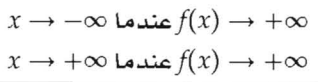
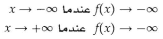
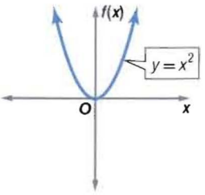

الدالة الزوجية
الدرجة : زوجية
المعامل الرئيس : موجب
المجال : مجموعة الأعداد الحقيقية.
المدي : مجموعة الأعداد الحقيقة الأكبر من أو التي تساوي القيمة الصغرى.
سلوك طرفي التمثيل البياني : في الاتجاه نفسه.

الدرجة : زوجية.
المعامل الرئيس : سالب.
المجال : مجموعة الأعداد الحقيقية.
المدى : مجموعة الأعداد الحقيقة الأقل من أو التي تساوي القيمة العظمى.
سلوك طرفي التمثيل البياني : في الاتجاه نفسه.

الرسم البياني للدالة الزوجية: شاهد الصورة
